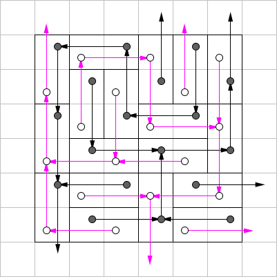

有一个 $n \times m$ 的棋盘，被 $1 \times 2$ 的骨牌覆盖。其中每个骨牌水平或竖直放置，恰好覆盖两个格子，且棋盘上的每个格子恰好被一个骨牌 (的一半) 所覆盖。
现在我们要在这个棋盘上做游戏，规则如下：
因此，两张照片是不同的，当且仅当存在一个格子，在某一张照片中被骨牌覆盖，而在另一张照片中未被覆盖。
求游戏所有可能的过程 (即从移除骨牌开始到拍照) 中一共能获得多少种不同的照片 (即求一共有多少种不同的照片是可能被拍出来的)。
第一行包含两个正整数 $n, m$ ($2 \leq n \cdot m \leq 2 \times 10^5, 2 \mid n \cdot m$)，分别表示棋盘的高度和宽度。
接下来 $n$ 行，每行一个长度为 $m$ 的字符串，其中每个字符为 $\texttt U, \texttt D, \texttt L$ 或 $\texttt R$。其中第 $i$ 行第 $j$ 个字符表示第 $i$ 行第 $j$ 列格子的状态，四个字符的含义分别为该格子被一个骨牌的上方、下方、左侧或右侧覆盖。
保证输入合法，即 $\texttt L$ 右边的字符一定为 $\texttt R$，以此类推。
输出一行一个整数，表示一共有多少种不同的照片是可能被拍出来的。
首先，对棋盘 (按照国际象棋) 黑白染色，可知一共有 $\dfrac {n m} 2$ 个黑格和 $\dfrac {n m} 2$ 个白格。
容易发现，在任意时刻，两个未染色的格子恰好是一黑一白。因此不考虑是否可能被拍出来的，照片的数量总数应恰好为 $\dfrac {n^2 m^2} 4$ (即表示通过合适摆放骨牌能拍出来的照片，剩下的照片是无论怎样都是非法的)。
考察骨牌的移动方式，一张骨牌 $\left( i, i + 1 \right)$ 只能被移至 $\left( i - 1, i \right)$ 或 $\left( i + 1, i + 2 \right)$，因此我们可以联想到建图 —— 将所有格子看成点，对一张骨牌，它的每一端向另一端跨过一格的格子连一条有向边，即 $i \to i + 2, i + 1 \to i - 1$。这样可以得到一张有向图，当然每条边连接的两个点都是同色的。这张有向图的形态如下图：
稍加观察可以发现，每一种颜色组成的图好像都是一个森林诶！确实，这样得到的图是不带圈的，下面给出证明：
反设图中存在圈，设圈内部的顶点数为 $I$，圈的面积为 $S$，边上的顶点为 $B$。
由 Pick 定理知 $I = S + 1 - \dfrac B2$，注意到圈中每条边的长度均为 $2$，因此容易发现 $2 \mid B, 4 \mid S \Rightarrow 2 \nmid I$。
说明圈内部的点数为奇数。但是圈内部应当是若干块完整的骨牌，故总点数为偶数，矛盾。
结合每个点的出度不超过 $1$ (每个连通分量是树或基环内向树) 可知，图的形态一定是森林。
建完图后考虑题中所述的 "游戏" 的过程：首先需要移除一个骨牌 —— 转化到图中就是删除一对相邻的黑点和白点。我们也可以看成在原来的黑点和白点上分别放一枚黑棋子和白棋子，设位置为 $b_0, w_0$。
然后每移动一次，根据变化的格子的颜色，可以将其视为将一枚黑棋子沿着有向边的方向移动一步或将一枚白棋子沿着有向边的方向移动一步。
因此考察最终状态 (即拍照时的状态) 的两个空格子，或者说黑棋子和白棋子的位置 $b, w$，可以发现 $b$ 在 $b_0$ 的子树中，$w$ 在 $w_0$ 的子树中 (由于先前已经证明过是森林，故可以使用 "子树")。
我们将黑棋子在 $b$，白棋子在 $w$ 的状态 (照片) 记作 $\left( b, w \right)$，于是照片 $\left( b, w \right)$ 可以被拍出来当且仅当存在一张骨牌 $\left( b_0, w_0 \right)$，使得 $b_0$ 是 $b$ 的祖先，$w_0$ 是 $w$ 的祖先。
很好，现在问题就已经完全转化为一个树上统计问题了。
既然存在性量词 "存在" 不好处理，我们就计算有多少种照片是在给定的初始盘面下无论如何也拍不出来的，即不存在同一张骨牌上的 $\left( b_0, w_0 \right)$ 满足 $b_0 \leadsto b, w_0 \leadsto w$。
考虑在黑树上 dfs，当搜到节点 $b_0$ 时，找到对应的 $w_0$，并给白树中以 $w_0$ 为根的子树打上标记。此时白树中未打标记的点就是无法拍到的点。
记得在搜完黑树的一棵子树后将标记撤回，因此可以是因为加减法标记。
由非负性知我们只需要实现子树加、统计最小值及其个数，借助 dfs 我们只需要一个普通线段树即可。
时间复杂度 $O \left( n m \log n m \right)$。
#include <bits/stdc++.h>
#define id(r, c) ((r) * C + (c) + 1)
#define EB emplace_back
using std::cin;
using std::cout;
typedef unsigned int u32;
typedef std::vector <int> vector;
const int N = 200054;
int n, R, C;
int p[N], fc[N], nc[N];
int cnt = -1, id[N], eid[N], ad[N];
long long ans;
char s[N];
vector G[N];
namespace ST {
#define segc int M = (L + R - 1) >> 1, lc = id << 1, rc = lc | 1
struct node {int v, cnt, tag;} x[265000];
void update(node &ret, const node &l, const node &r) {
if (l.v == r.v) ret.v = l.v, ret.cnt = l.cnt + r.cnt;
else if (l.v < r.v) ret.v = l.v, ret.cnt = l.cnt;
else ret.v = r.v, ret.cnt = r.cnt;
ret.v += ret.tag;
}
void build(int id, int L, int R) {
x[id].cnt = R - L + 1;
if (L == R) return;
segc; build(lc, L, M), build(rc, M + 1, R);
}
void add(int id, int L, int R, int ql, int qr, int v) {
if (ql <= L && R <= qr) {x[id].v += v, x[id].tag += v; return;}
segc;
if (ql <= M) add(lc, L, M, ql, qr, v);
if (qr > M) add(rc, M + 1, R, ql, qr, v);
update(x[id], x[lc], x[rc]);
}
}
inline int ID(int r, int c) {return (u32)r < (u32)R && (u32)c < (u32)C ? r * C + c + 3 : ((r ^ c) & 1) + 1;}
inline void link(int x, int px) {p[x] = px, nc[x] = fc[px], fc[px] = x;}
void dfs(int x) {
int y; id[x] = ++cnt;
for (y = fc[x]; y; y = nc[y]) dfs(y);
eid[x] = cnt;
}
void solve(int x) {
int y, z = ad[x];
ST::add(1, 1, n, id[z], eid[z], 1);
if (!ST::x[1].v) ans -= ST::x[1].cnt;
for (y = fc[x]; y; y = nc[y]) solve(y);
ST::add(1, 1, n, id[z], eid[z], -1);
}
int main() {
int i, j;
std::ios::sync_with_stdio(false), cin.tie(NULL);
cin >> R >> C, n = R * C / 2, ans = (long long)n * n;
for (i = 0; i < R; ++i)
for (cin >> s, j = 0; j < C; ++j)
switch (s[j]) {
case 68: link(ID(i, j), ID(i - 2, j)), ad[ID(i, j)] = ID(i - 1, j); break;
case 76: link(ID(i, j), ID(i, j + 2)), ad[ID(i, j)] = ID(i, j + 1); break;
case 82: link(ID(i, j), ID(i, j - 2)), ad[ID(i, j)] = ID(i, j - 1); break;
case 85: link(ID(i, j), ID(i + 2, j)), ad[ID(i, j)] = ID(i + 1, j); break;
}
ST::build(1, 1, n), dfs(1), assert(cnt == n);
for (i = fc[2]; i; i = nc[i]) solve(i);
cout << ans << '\n';
return 0;
}
坑1：为了方便 dfs，可以令每个连向外部的点连向对应颜色的 "大根"，然后在 "大根" 上 dfs。
坑2：注意区间加的线段树是可以标记永久化的。